Formation des enseignants : électronique et Arduino au collège, au lycée et en formation professionnelle, avec ou sans matériel.
Séance de 2 heures · un vidéoprojecteur · Internet facultatif Kit de formation de Jollof Studio par Mamadou Sarr · licence AGPL-3.0
Programme
Deux heures, dont une heure de pratique
Horaire
Partie
Ce qu’on fait
0:00 – 0:10
Pourquoi simuler
Ce que la simulation apporte en classe, et ses limites
0:10 – 0:30
Démonstration
Interface, câblage automatique, vérificateur, modes de code, simulation
0:30 – 0:50
Atelier 1
LED et bouton (débutant)
0:50 – 1:10
Atelier 2
Feu tricolore (intermédiaire)
1:10 – 1:15
Pause
1:15 – 1:35
Atelier 3
Thermomètre LCD ou radar de recul, puis le montage à corriger
1:35 – 1:50
Pour la classe
TP guidés, rendu des élèves, boîtier école, vidéo, Wokwi, KiCad, carte réelle
1:50 – 2:00
Dépannage et questions
Problèmes fréquents, où trouver de l’aide
Pourquoi simuler · 0:00
Pourquoi simuler avant de câbler ?
Peu de matériel : une carte pour quatre à six élèves. À l’écran, chacun câble et programme son propre montage.
Des erreurs sans casse : LED sans résistance, 5 V sur une carte 3,3 V, court-circuit sur l’USB. La simulation les montre (étincelles, fumée, explication) et rien ne grille.
Voir l’invisible : courant qui circule dans les fils, tensions, multimètre, oscilloscope.
Préparer la paillasse : on n’arrive au vrai matériel qu’avec un montage vérifié, un schéma imprimé et la liste des composants.
Hors ligne : l’application, les exemples, les TP et MicroPython fonctionnent sans Internet.
Le même projet partout : un fichier .jollof s’ouvre sur chaque poste, s’imprime, se rend comme un devoir.
Règle de la séance : on simule d’abord ; on câble en vrai quand la pastille affiche ✓ Vérifié
Pourquoi simuler · limites
Ce que la simulation remplace, et ce qu’elle ne remplace pas
Elle remplace bien
la première prise en main d’un composant et de son câblage ;
l’écriture et la mise au point du programme (pas à pas, moniteur série) ;
la recherche d’erreurs de câblage, expliquées une par une ;
les mesures de base : tension, courant, signal PWM ;
les montages trop chers ou trop risqués pour être refaits vingt fois.
Elle ne remplace pas
le geste : enfoncer un composant, repérer un faux contact, un fil coupé ;
les vrais composants : tolérances, capteur défectueux, parasites, rebonds ;
la chaleur, les pointes de courant au démarrage d’un moteur ;
la sécurité électrique : jamais de secteur 230 V avec les élèves, simulé ou non.
Prévoir au moins une séance sur paillasse par séquence.
Démonstration · 0:10
L’écran en un coup d’œil
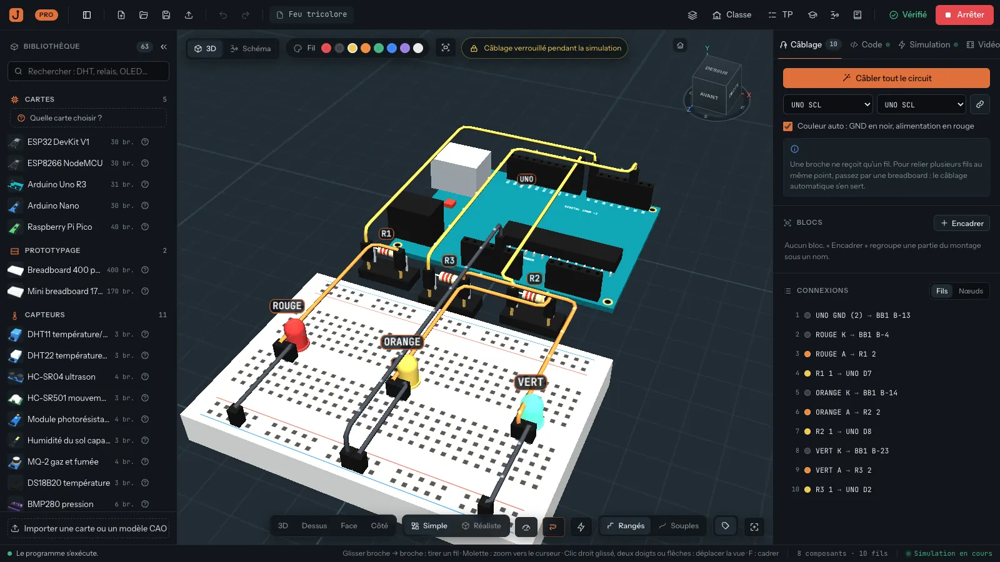
123456
Projet 02-feu-tricolore.jollof, simulation lancée.
Bas du plan : vues, rendu Simple / Réaliste, Instruments, Courant, mode léger ⚡.
Démonstration
Poser les composants, se déplacer
Un clic sur un composant de la bibliothèque le pose au centre de la vue ; on le glisse ensuite.
R pivote, Suppr retire, Ctrl+Z annule tout.
Le « ? » ouvre la fiche : brochage, fonctionnement, erreurs fréquentes, exemple de code.
Tourner la vue
clic gauche glissé sur le tapis
Déplacer la vue
clic droit glissé, ou flèches
Zoomer
molette (vers le curseur)
Tout cadrer
F
Vues fixes
3D, Dessus, Face, Côté (en bas)
Schéma en direct
S
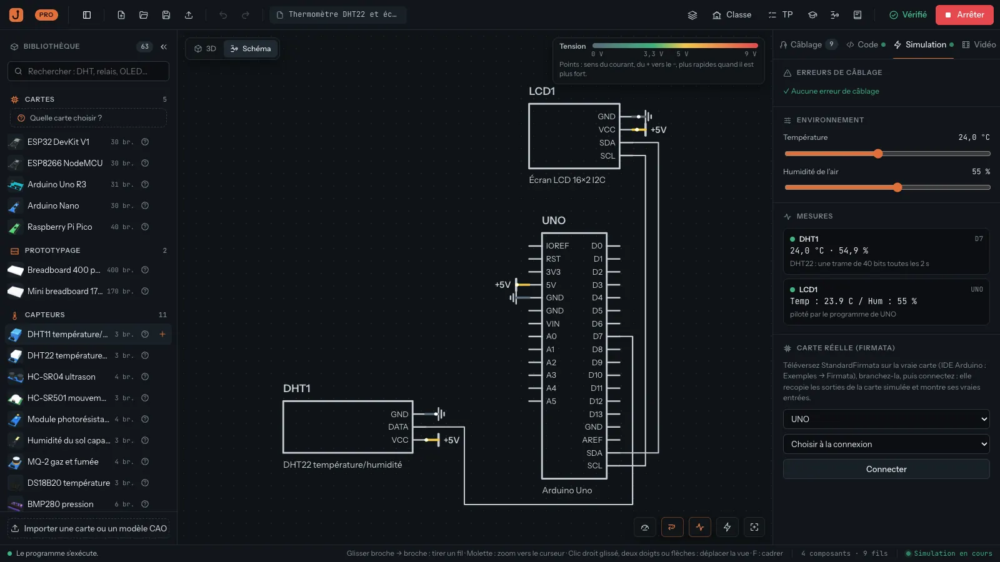
Touche S : le même montage en schéma électrique, pendant la simulation.
PC ancien ou lent : bouton ⚡ mode léger en bas du plan de travail. « Quelle carte choisir ? » (en tête des cartes) compare Uno, Nano, ESP32 et Pico.
Démonstration
Câbler : à la main ou automatiquement
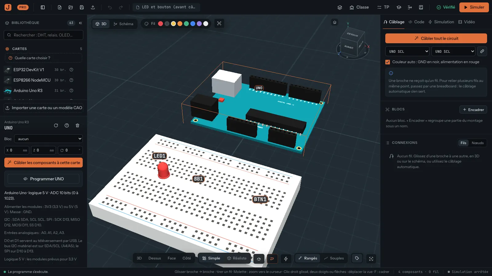
Avant : carte sélectionnée, « Câbler les composants à cette carte ».
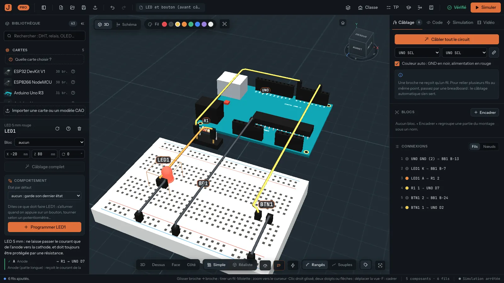
Après : 6 fils, une résistance de 220 Ω ajoutée, rôle de chaque broche.
À la main : glisser d’une broche à l’autre. Une broche ne prend qu’un fil : pour relier plusieurs fils au même point, passer par la breadboard.
Clic sur un fil, puis glisser une extrémité : rebrancher.
Automatique : ajoute ce qu’un électronicien ajouterait (220 Ω pour une LED, transistor pour un buzzer, pont diviseur 5 V → 3,3 V…).
Refuse ce qui est impossible, avec une explication.
Démonstration
Le vérificateur : erreurs et avertissements
La pastille à côté de « Simuler » se met à jour après chaque changement :
✓ Vérifié✕ 5 erreurs! 1 avertissement
F7 ouvre le rapport : un code stable (J0301…), l’endroit, l’état qui déclenche la faute (« BTN1 appuyé »), une aide, souvent une correction en un clic.
Erreur : jamais acceptée. Elle bloque l’envoi d’une copie et le téléversement sur une vraie carte (Pro).
Avertissement : peut être accepté avec une raison écrite, gardée dans le projet et affichée dans le rapport.
La simulation tourne quand même : voir fumer, c’est aussi apprendre.
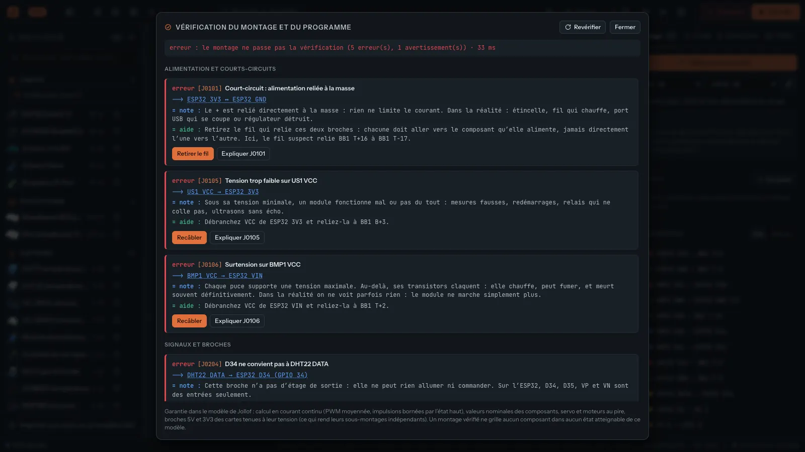
Exemple « Montage à corriger » : 5 erreurs, 1 avertissement.
Démonstration · honnêteté
Ce que « Vérifié » veut dire, et ne veut pas dire
Garanti
Chaque état atteignable est essayé : boutons relâchés et appuyés, potentiomètres aux butées et au milieu, capteurs à leurs extrêmes, chaque broche commandée à LOW et à HIGH.
Dans chaque état, aucun composant ne dépasse les valeurs de sa fiche technique ; le programme est d’accord avec le câblage.
Calcul comparé au simulateur de référence ngspice sur 80 circuits.
Pas garanti
Ce que le modèle ignore : régimes transitoires, chaleur (sauf résistances et régulateur LM7805), mécanique, radio, dispersion des composants, câblage sous tension.
Au-delà de 4 096 états par partie du montage : « vérification partielle », c’est écrit.
Mode Fidèle et MicroPython : le vérificateur ne lit pas le programme ; il suppose que toute broche reliée peut être une sortie. Il peut ajouter des fautes, jamais en cacher.
Exemple rencontré en préparant ce kit (projet 05, Pico sous MicroPython) : sans résistance entre le curseur du potentiomètre et GP28, le vérificateur signale une erreur. Potentiomètre en butée et GP28 en sortie, 127 mA traverseraient la broche. Une résistance de 1 kΩ en série borne ce courant à 3,3 mA ; la lecture reste juste.
Source : docs/PROVEN.md du projet (ce qui est prouvé, les modèles, la comparaison avec ngspice).
Démonstration
Trois façons d’exécuter le code
Débutant
Fidèle
MicroPython
Cartes
toutes
Uno, Nano, Pico
Pico
Langage
C++ d’Arduino simplifié : pas de pointeurs, de classes ni de sprintf (utiliser String)
tout le C++ d’Arduino et ses bibliothèques
Python (MicroPython 1.29)
Démarrage
immédiat, hors ligne
compilé par arduino-cli ; Internet à la première utilisation ; application installée
immédiat, hors ligne (micrologiciel fourni)
Mise au point
pas à pas, points d’arrêt, variables
moniteur série
moniteur série (REPL), plusieurs fichiers
Vérificateur
lit les broches du programme
prudent : toute broche reliée peut être une sortie
Commencer en Débutant ; passer en Fidèle pour un programme existant qui utilise ce que le Débutant ne connaît pas ; MicroPython pour une initiation à Python sur Pico.
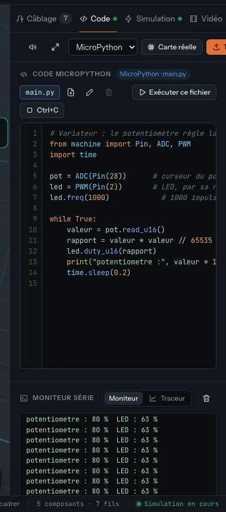
« Mode d’exécution » en haut de l’onglet Code (projet 05).
Démonstration
Simuler : capteurs, effecteurs, mesures
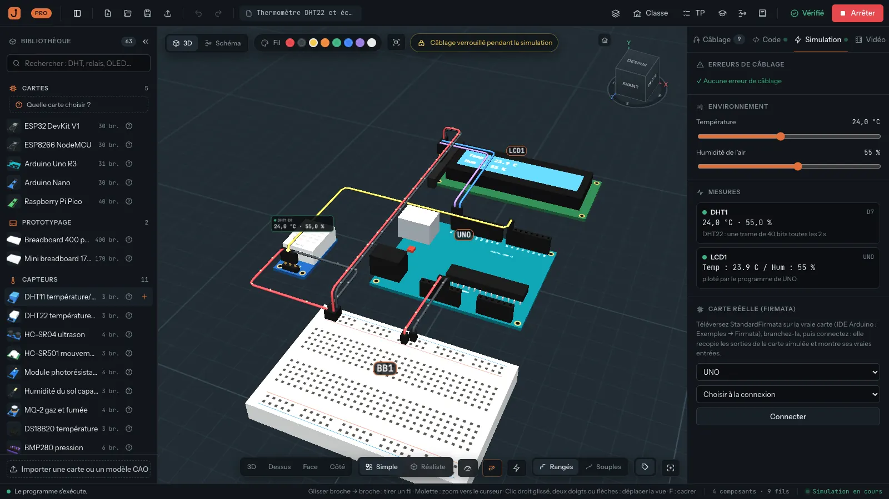
Projet 03 : le curseur de température change la mesure du DHT22 et l’écran LCD.
Simuler lance les programmes ; le câblage est verrouillé.
Onglet Simulation : curseurs d’environnement (température, distance, lumière…) selon les capteurs présents, mesures, état des effecteurs.
Un clic sur un bouton du montage l’appuie ; un potentiomètre se règle par son curseur.
Instruments : oscilloscope 4 voies, multimètre.
Courant : des points suivent le courant dans les fils ; touche S pour le schéma en direct.
Moniteur série dans l’onglet Code.
Démonstration
Quand le montage est faux
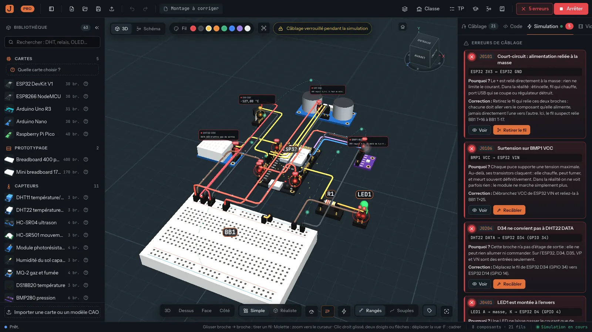
Exemple « Montage à corriger », simulation lancée.
Bord rouge, ondes sur la broche fautive, fil fantôme vert vers la bonne broche.
Pour chaque erreur : où, pourquoi c’est un problème en vrai, comment corriger.
Corrections en un clic : Recâbler, Inverser, Retirer le fil, Relier les masses.
Les 5 erreurs du montage à corriger : BMP280 en 5 V · DHT22 sur une broche « entrée seule » · LED à l’envers · HC-SR04 en 3,3 V · court-circuit entre les rails. Plus un avertissement : DS18B20 sans résistance de tirage.
Atelier 1 · 0:30 · 20 min · débutant
LED et bouton poussoir
Nouveau projet (Ctrl+N). Poser une Arduino Uno, une breadboard, une LED rouge, une résistance de 220 Ω, un bouton.3 min
Câbler à la main : D7 → résistance → anode (A) ; cathode (K) → GND ; bouton entre D2 et GND.7 min
Corriger jusqu’à ✓ Vérifié (F7 pour le rapport).2 min
Onglet Code : écrire le programme ci-contre, puis Simuler et cliquer sur le bouton.5 min
Comparer avec projets/01-led-bouton.jollof.3 min
const int LED = 7;
const int BOUTON = 2;
void setup() {
pinMode(LED, OUTPUT);
pinMode(BOUTON, INPUT_PULLUP);
}
void loop() {
if (digitalRead(BOUTON) == LOW) {
digitalWrite(LED, HIGH);
} else {
digitalWrite(LED, LOW);
}
}
INPUT_PULLUP : bouton relâché = HIGH, appuyé = LOW. Pas de résistance externe.
Défi : la LED clignote tant que le bouton est appuyé.
Atelier 2 · 0:50 · 20 min · intermédiaire
Feu tricolore
Poser une Uno, une breadboard et trois LED (rouge, jaune, verte). Sélectionner la carte, puis « Câbler les composants à cette carte ». Observer : trois résistances ajoutées, masses sur le rail.5 min
Ouvrir projets/02-feu-tricolore.jollof : lire le programme (fonction feux(), delay()).4 min
Simuler ; suivre le moniteur série. Changer les durées (vert 5 s, orange 2 s, rouge 5 s).5 min
Instruments → multimètre : courant dans la LED rouge allumée. Comparer au calcul (5 V − 2 V) ÷ 220 Ω.6 min
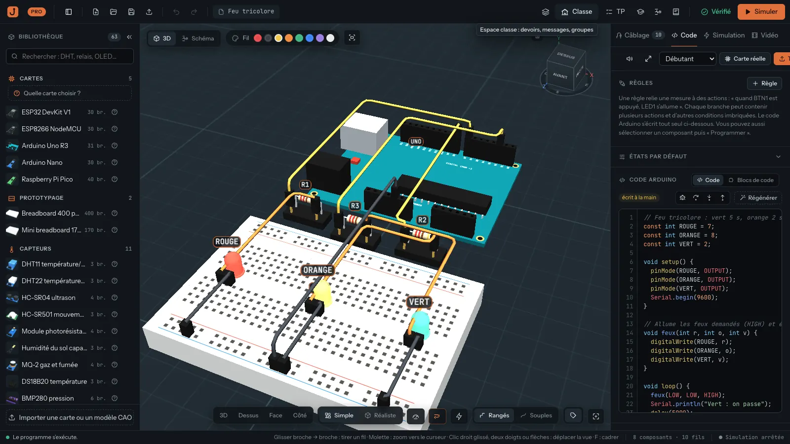
Le programme du feu tricolore, mode Débutant.
Défi : un feu piéton (une LED verte, une rouge) et un bouton d’appel.
Atelier 3 · 1:15 · 20 min · avancé
Capteurs et écran, puis le montage à corriger
Au choix (10 min)
projets/03-thermometre-lcd.jollof : DHT22 et écran LCD I2C. Changer la température ; pourquoi l’écran n’a-t-il que 4 fils ? (bus I2C : SDA, SCL).
projets/04-radar-de-recul.jollof : HC-SR04 et buzzer sur Nano. Régler la distance ; pourquoi un transistor ? (le buzzer tire 25 mA, une broche en conseille 20).
Pour ceux qui vont vite : projets/05-pico-micropython-variateur.jollof.
Montage à corriger (10 min)
Bouton Exemples → « Montage à corriger ». Trouver les 5 erreurs sur le schéma, puis vérifier avec la simulation.
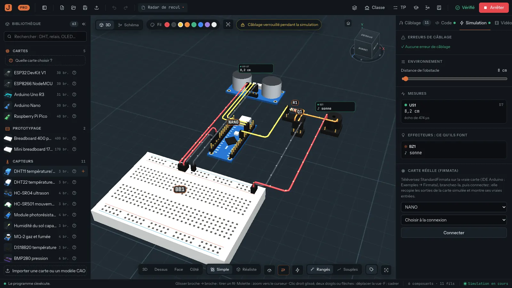
Radar de recul : à 8 cm, le buzzer sonne en continu.
Pour la classe · 1:35
Les TP guidés
Bouton TP : 11 TP prêts, du collège à la formation professionnelle, de 40 à 75 min.
Chaque TP part d’un montage posé, non câblé, et guide étape par étape.
Chaque étape se vérifie : câblage, programme, comportement en simulation, mesure au multimètre, questions.
Une résistance se pose dans les deux sens, n’importe quelle GND convient : comme en vrai.
Progression gardée sur l’ordinateur ; projet personnel mis de côté pendant le TP.
À la fin : compte-rendu PDF (nom, étapes validées, réponses, mesures, schéma).
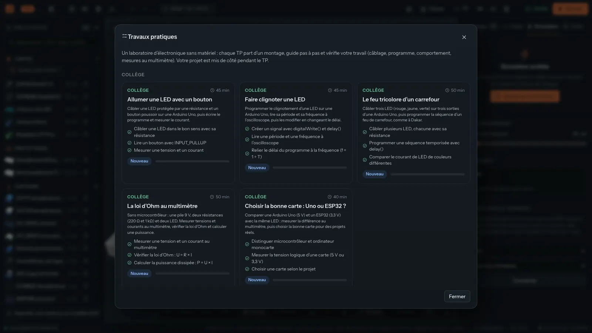
La bibliothèque des TP, par niveau.
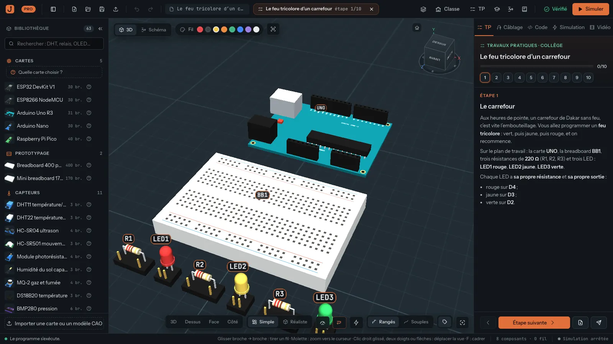
Une séance : étapes numérotées, consigne, « Étape suivante ».
Pour la classe
Comment les élèves rendent leur travail
Sans serveur (hors ligne)
TP : bouton « Compte-rendu en PDF » à la fin, avec le nom de l’élève.
Projet libre : Ctrl+S → un fichier .jollof, ramassé par clé USB ou réseau de la salle.
Le schéma (bouton Schéma) s’imprime ou s’enregistre en PDF, avec le tampon VÉRIFIÉ ou NON VÉRIFIÉ.
Avec l’espace classe
L’élève se connecte (bouton Classe) avec l’identifiant donné par l’enseignant.
Il ouvre le devoir, travaille (enregistrement automatique), clique sur Envoyer la copie.
L’envoi est bloqué tant qu’une erreur reste (sauf l’envoi automatique à l’échéance).
Montage corrigé automatiquement ; note et commentaires de l’enseignant.
Élèves : édition gratuite. Créer classes et devoirs, corriger, « Envoyer ce TP à une classe » : édition Pro.
Pour la classe
Le boîtier école : l’espace classe sans Internet
Un vieux PC, un mini-PC ou un Raspberry Pi 4/5 (1 Go de mémoire au minimum, 2 Go conseillés), sur le réseau local de l’établissement.
Internet n’est utile que pour l’installation et les mises à jour.
Installation par le référent numérique : dans le dossier server/, sudo ./install.sh (Debian, Ubuntu, Raspberry Pi OS 64 bits), ou l’image Raspberry Pi toute prête.
Sur chaque poste : Classe → Serveur → adresse du boîtier, par exemple http://192.168.1.50:3100.
Sauvegarde automatique chaque jour ; la copier régulièrement sur une clé USB.
Si les postes ne se connectent pas : Wi-Fi « invités » isolé, adresse du boîtier qui a changé (demander une adresse fixe), pare-feu (port 3100).
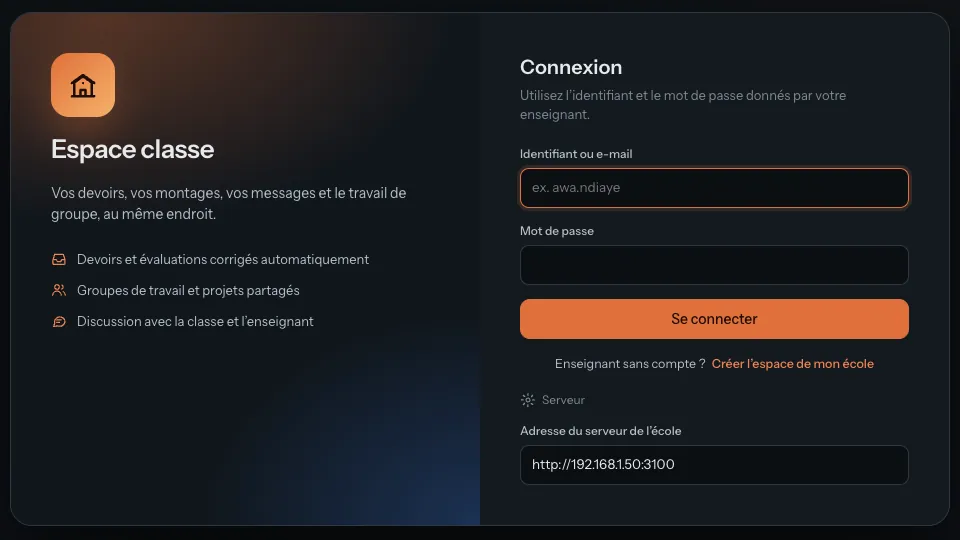
Écran de connexion, rubrique « Serveur ».
Pour la classe
Une vidéo de câblage pour les élèves
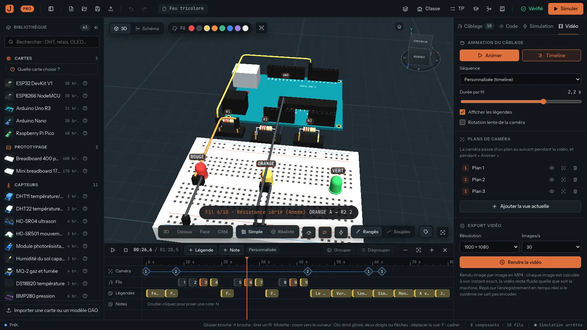
Timeline du projet 02 : pistes Caméra, Fils, Légendes.
Onglet Vidéo : « Animer » joue la vidéo, « Timeline » ouvre ses pistes. Les 5 projets du kit ont une timeline prête.
Lancer la simulation avant « Rendre la vidéo » : LED et écrans s’animent.
MP4, 30 images/s, sans son. 720p pour partager (environ 21 Mo par minute), 1080p pour projeter.
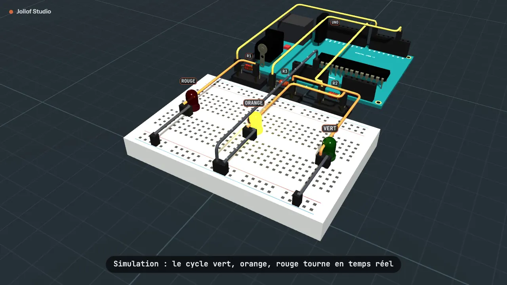
Une image de la vidéo rendue (projet 02, 720p).
Narration minutée et réglages : scripts-videos.md. Rendu image par image : un PC lent met plus longtemps, la vidéo reste fluide.
Pour la classe
Importer un projet Wokwi
Bouton Importer un projet Wokwi (flèche vers le haut, en haut à gauche).
Choisir diagram.json et sketch.ino (et libraries.txt), ou le .zip téléchargé depuis Wokwi.
Les composants connus deviennent des composants de la bibliothèque ; les breadboards de Wokwi sont remplacées par des fils directs.
Le programme va à la première carte, en mode Fidèle s’il dépasse le mode Débutant.
Un compte rendu liste ce qui n’a pas pu être importé.
Ensuite : vérificateur, simulation, vidéo, comme pour tout projet.
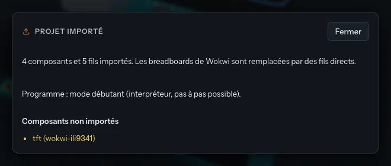
Un écran TFT ILI9341 n’a pas d’équivalent : il est signalé.
Intérêt : récupérer les nombreux projets publiés en ligne, puis les travailler hors ligne avec le vérificateur.
Pour la classe
Du montage au circuit imprimé : export KiCad
Bouton Schéma (barre d’outils) : le schéma électrique sur une feuille A4 ou A3.
Bouton KiCad : un fichier .zip avec le schéma .kicad_sch et la netlist .net (KiCad 6 à 9).
Dans KiCad : ouvrir le schéma, ou dans Pcbnew Fichier → Importer → Netlist.
Empreintes traversantes courantes ; cartes et modules deviennent des barrettes au pas de 2,54 mm : le module s’enfiche sur le circuit imprimé.
Utile en formation professionnelle et en BTS.
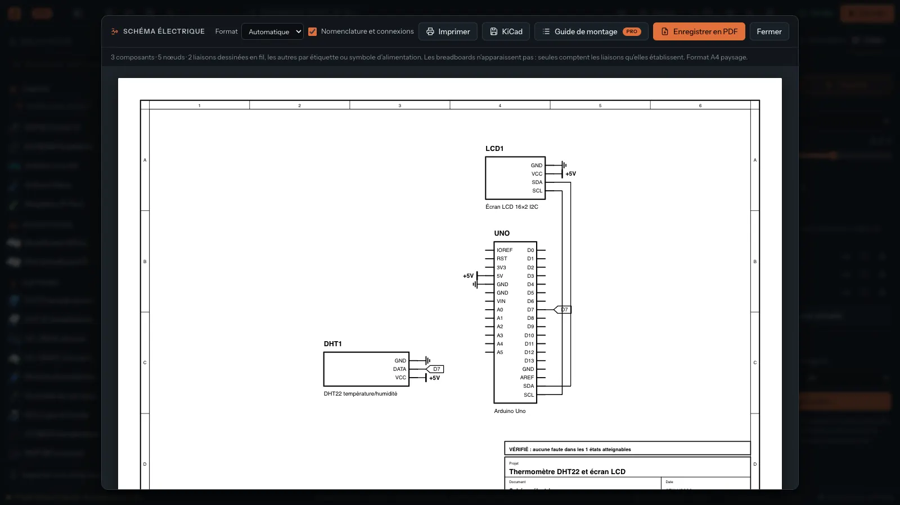
Schéma du projet 03, cartouche avec le tampon « VÉRIFIÉ ».
Pour la classe
La simulation pilote une vraie carte (Firmata)
Dans l’IDE Arduino : Fichier → Exemples → Firmata → StandardFirmata, téléverser sur la vraie Uno (une fois).
Brancher la carte en USB. Dans Jollof Studio, lancer la simulation, onglet Simulation → Carte réelle (Firmata).
Choisir la carte simulée et le port, puis Connecter.
Les sorties de la carte simulée sont recopiées sur la vraie : LED, PWM, servo.
Les vraies entrées sont lues : valeur simulée et valeur réelle côte à côte. Un écart montre ce que le modèle ne voit pas.
Dans un navigateur : Chrome ou Edge (Web Serial). StandardFirmata communique à 57 600 bauds.
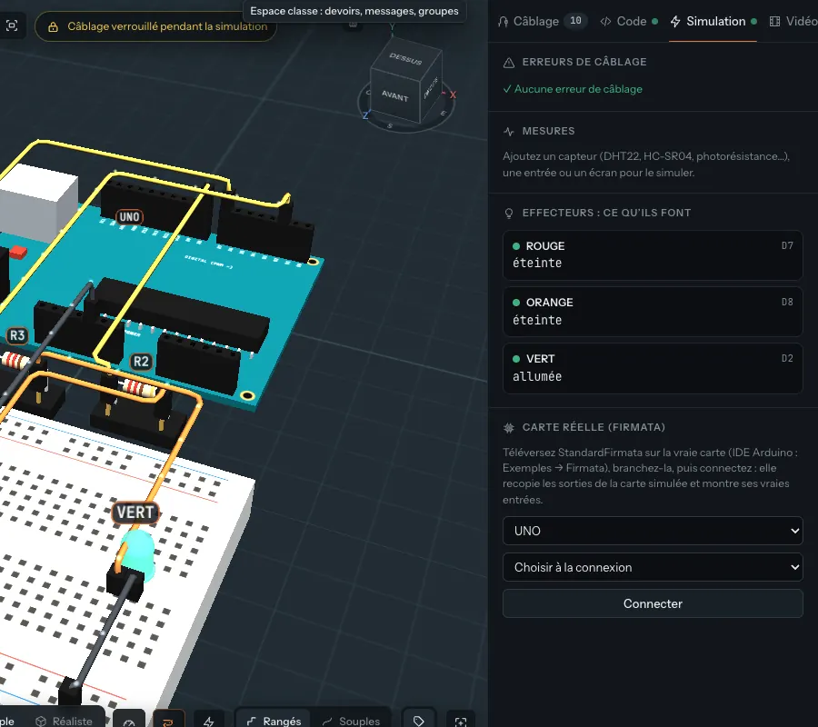
Section « Carte réelle (Firmata) ».
Dépannage · 1:50
Problèmes fréquents (1/2)
Ce qu’on voit
Que faire
Impossible de tirer un second fil depuis une broche (« occupée »)
Une broche, un fil, comme un vrai connecteur. Passer par une rangée ou un rail de la breadboard.
Impossible de modifier les fils
La simulation est lancée : le câblage est verrouillé. Cliquer sur Arrêter.
La LED reste éteinte
LED à l’envers (anode = patte longue vers la résistance), broche différente dans le code et dans le câblage, pinMode oublié. Lire la pastille et F7.
Un bouton qui « s’allume tout seul »
Entrée en l’air : utiliser INPUT_PULLUP et relier l’autre patte à GND.
Erreur de compilation en mode Débutant (pointeurs, sprintf, classes)
Réécrire avec String, ou passer en mode Fidèle (application installée).
L’écran LCD n’affiche rien
Adresse 0x27 dans le code, lcd.init() et lcd.backlight() dans setup(), SDA relié à SDA et SCL à SCL (pas croisés).
La mesure ne suit pas tout de suite le curseur
Normal : le capteur simulé a l’inertie et la cadence de lecture du vrai (DHT22 : une mesure toutes les 2 s).
Dépannage
Problèmes fréquents (2/2)
Ce qu’on voit
Que faire
Affichage lent, ventilateur bruyant
Bouton ⚡ mode léger (en bas du plan de travail) ; fermer les autres logiciels. La vue Schéma (S) coûte moins que la 3D.
Le mode Fidèle ne démarre pas sans Internet
Il télécharge arduino-cli et les fichiers de la carte à la première utilisation. Le lancer une fois par poste, avec Internet, avant la séance.
« Rendre la vidéo » enregistre en temps réel
Le système ne sait pas encoder image par image (fréquent sous Linux). La vidéo est enregistrée pendant la lecture : ne pas toucher à la fenêtre.
Le poste ne se connecte pas à l’espace classe
Adresse du serveur (Classe → Serveur), même réseau que le boîtier, Wi-Fi invités, pare-feu.
Windows 7 ou 8
L’application demande Windows 10 ou plus. Une version web peut être servie sur le réseau local (voir le README du projet).
Une erreur en mode Fidèle ou MicroPython, alors que le programme semble juste
Le vérificateur ne lit pas ces programmes : il essaie chaque broche reliée en sortie. Ajouter une résistance série (1 kΩ) devant une entrée reliée directement à une alimentation, comme le curseur d’un potentiomètre.
Pour continuer
Où trouver de l’aide
Dans l’application
Documentation : une fiche par carte et par composant (brochage, erreurs fréquentes, exemple de code).
Exemples : six montages prêts et un montage à corriger.
projets/ : les 5 projets ; scripts-videos.md : narrations.
Dans le projet
docs/PROVEN.md : ce que le vérificateur garantit.
server/README.md : installer le boîtier école.
exemples/LISEZMOI.md : les exemples fournis.
Licence : ce kit fait partie de Jollof Studio, publié sous licence AGPL-3.0 (ou ultérieure). Toute copie ou version modifiée garde la mention « Jollof Studio par Mamadou Sarr ».
Licence commerciale et contact : voir COMMERCIAL.md (contact à compléter par le titulaire des droits).
← → naviguer · N notes du présentateur · F plein écran · Ctrl+P imprimer · ? cette aide